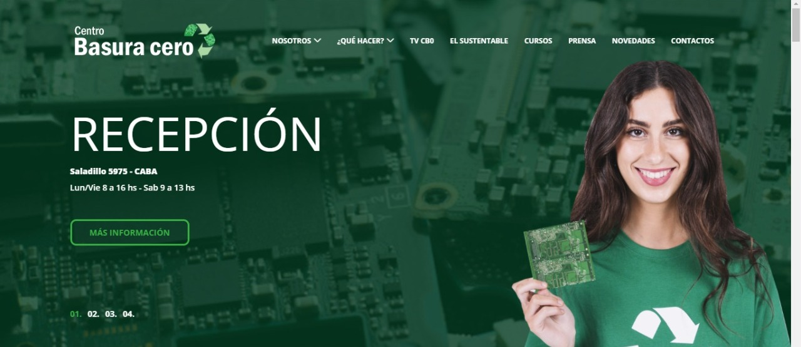
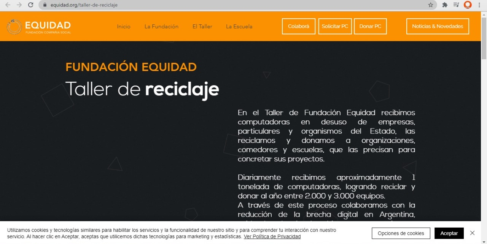

ORGANIZACIONES NACIONALES
CENTRO DE BASURA CERO
Visitar la pagina

“ En el centro separamos cada elemento (cables, tornillos, vidrio, etc) todo es clasificado. Los productos electrónicos
que fueron recuperados son reutilizados y donamos a los más necesitados.”
RECICLANDO SCRAP
Visitar la pagina

“Reciclando Scrap es una empresa dedicada al reciclaje y
re utilización de residuos electrónicos.”
FUNDACIÓN EQUIDAD
Visitar la pagina

“En el Taller de Fundación Equidad reciben computadoras en desuso de empresas,
particulares y organismos del Estado, las reciclan y donan a organizaciones,
comedores y escuelas, que las precisan para concretar sus proyectos.”